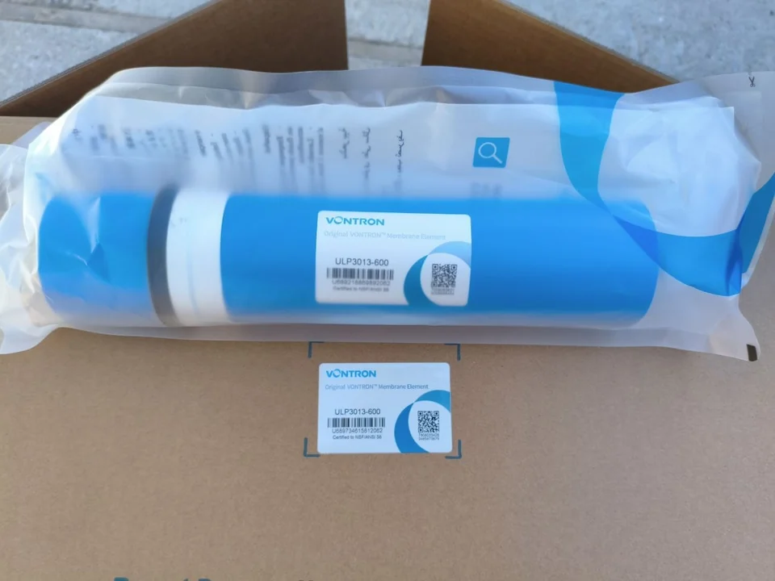
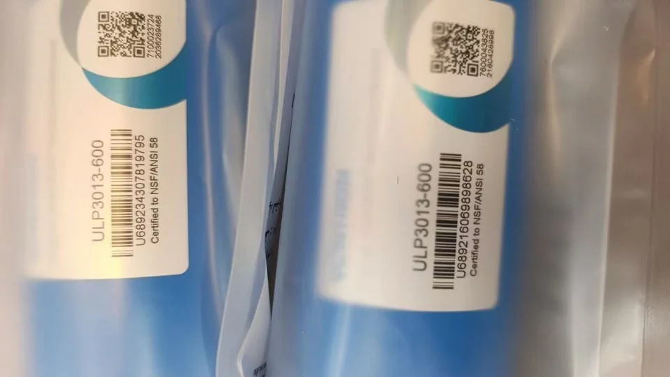

Confirm current availability
Vontron ULP3013-600
This is a residential ultra-low-pressure reverse osmosis membrane element. For an inquiry, we check the complete model on the physical label and match it to the requested quantity, destination and documentation.
| Complete model | ULP3013-600 |
|---|---|
| Nominal permeate flow | 600 GPD (2.27 m³/day) |
| Average rejection | 98% |
| Minimum rejection | 96% |
| Test pressure | 100 psi (0.69 MPa) |
| Test solution | 250 ppm NaCl at 25°C |
| Test pH and recovery | pH 6.5–8.5; single-element recovery 50% |
| Published dimensions | 13.11 in (333.0 mm) long × 2.70 in (67.8 mm) diameter |
| Housing and pump check | Confirm element geometry, port and seal arrangement, housing, pump pressure and target operating conditions before ordering. |
Vontron states that individual permeate flow and rejection can vary. Actual system output also depends on feed water, temperature, pressure, recovery, pretreatment and system design.